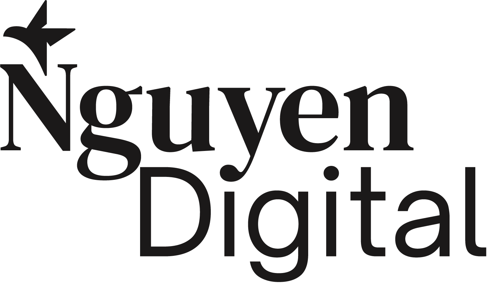
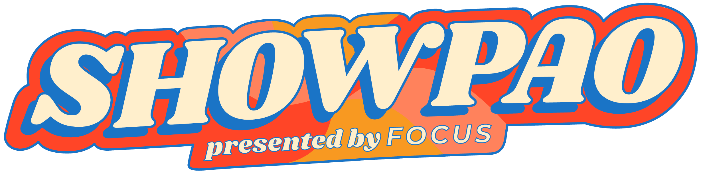
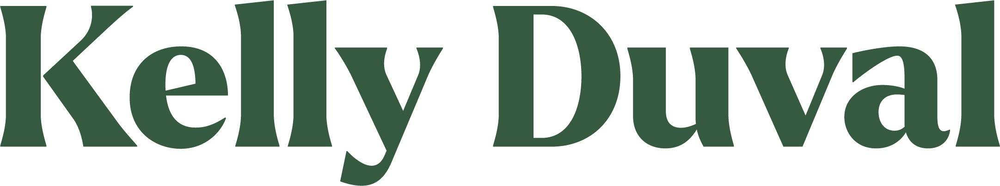
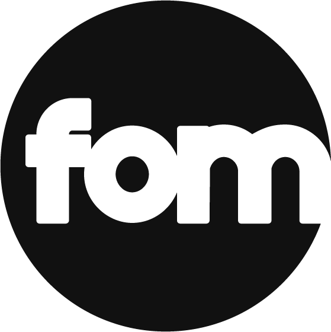

Mulburry Studio is a boutique SEO and digital strategy studio. They specialize in helping brands grow through custom search engine optimization, strategic content, and scalable digital systems.
Keywords:
Trustworthy, Engaging, Impressive
A look at my logo work through the years from 2018 to 2025
Mulburry Studio is a boutique SEO and digital strategy studio. They specialize in helping brands grow through custom search engine optimization, strategic content, and scalable digital systems.
Keywords:
Trustworthy, Engaging, Impressive

Nguyen Digital is a consumer research company. Through deep assessment analysis, NDR provides a transdisciplinary understanding to clients achieve product-market fit, secure capital, and align with customer needs.
Keywords:
Expansive, Curious
SeniorSynCare is a company that deals with end-of-life care by providing the tools, services and education necessary for a meaningful, peaceful, and community-based end-of-life care for seniors.
Keywords:
Trustworthy, calm, supportive

SHOWPAO is a celebration of the Filipino-Montreal community by providing a venue to demonstrate cultural and creative talents, as well as to promote Filipino culture to entrepreneurs, local orgs, and everyone in between.
Keywords:
Celebration, Warmth, Nostalgia

Kelly Duval is a freelance writer/editor currently working for B2B SaaS and software companies, with the end goal of expanding her client base to small businesses and entrepreneurs.
Keywords:
Clear, Trustworthy, Positive

"The Indigenous Futures Research Centre (IFRC) supports research that is led by and/or for Indigenous peoples and communities. It is an environment where Indigenous methods for knowledge recovery, discovery, and transmission are respected, and where faculty can learn different Indigenous research frameworks from one another while educating students in those methods." - Jason Lewis, Founder
Keywords:
Grounded, Inquisitive, Reconfiguration

Filipinos of Montreal is a photography project that was initiated to celebrate Canada's first Filipino Heritage month, held in June 2019. Similar to Humans of New York, FOM interviews Filipino-Montrealers to learn about the community, bridge networks, and emphasize the impact of individual storytelling for community healing.
Keywords:
Neutral, Impactful, Approachable
Rainbow Noodles is a Montreal-based organization that aims to provide safe(r) and inclusive spaces for LGBTQ2S+ Asian people.
Keywords:
Fun, Inviting, Inclusive

Coteacher sees itself as a kickstarter of a collaborative, global community that shares in the pursuit of knowledge in a tech-driven environment backed up by AI.
Keywords:
Modern, Versatile, Bold